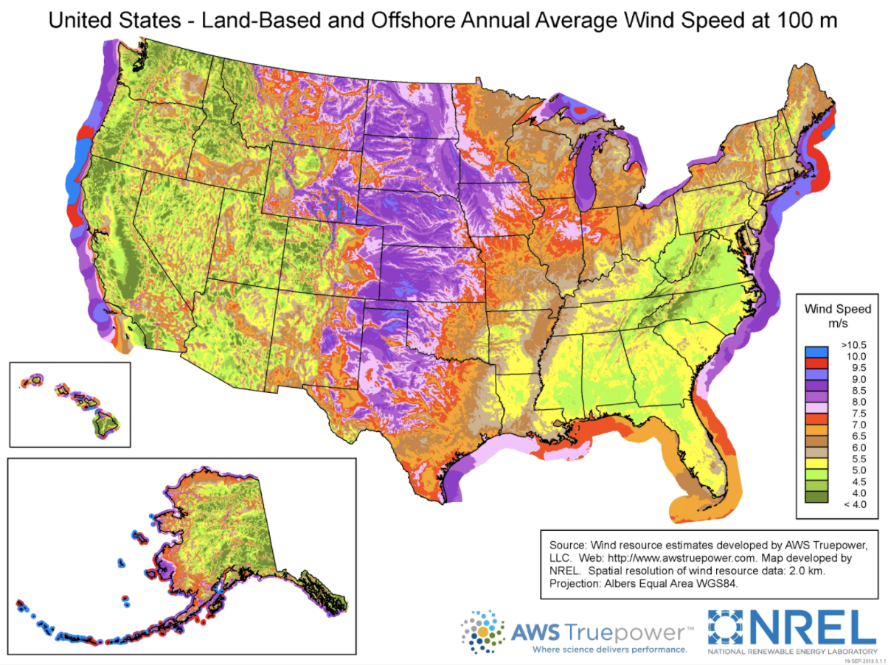
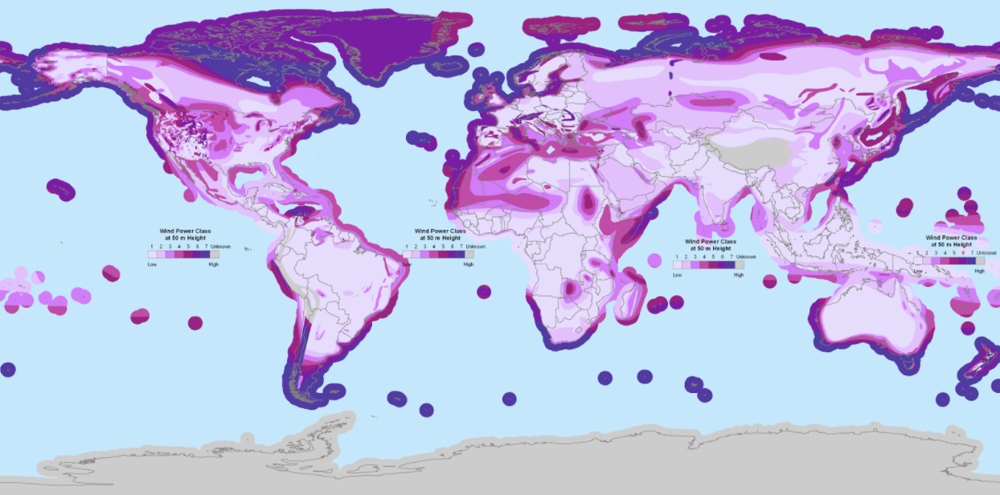
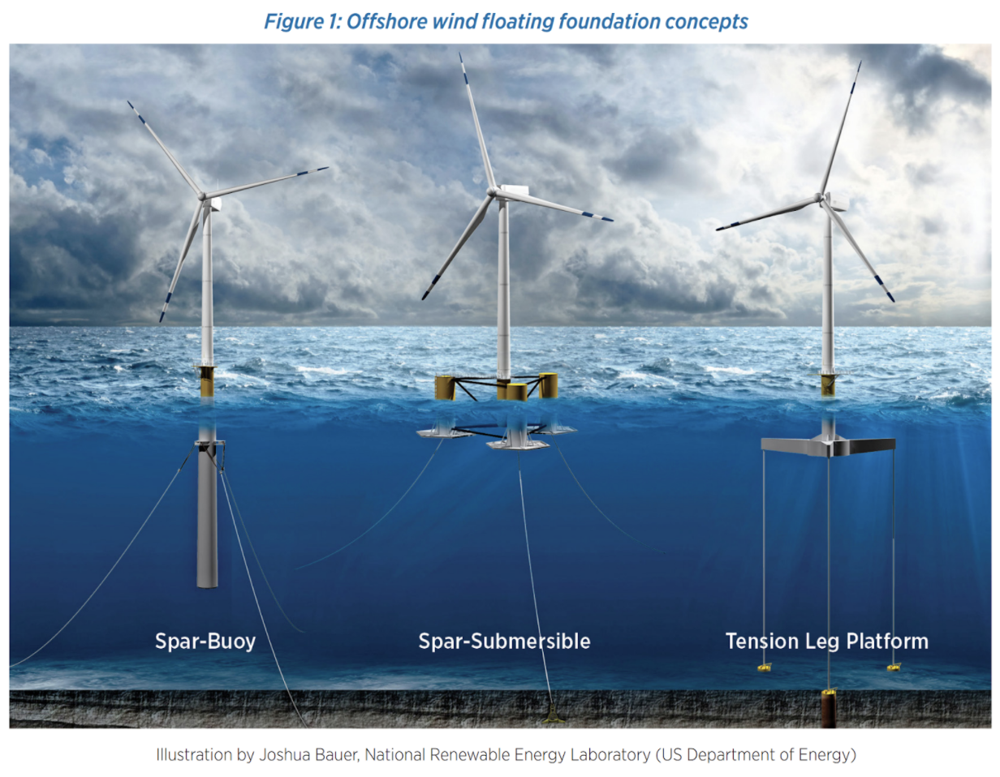
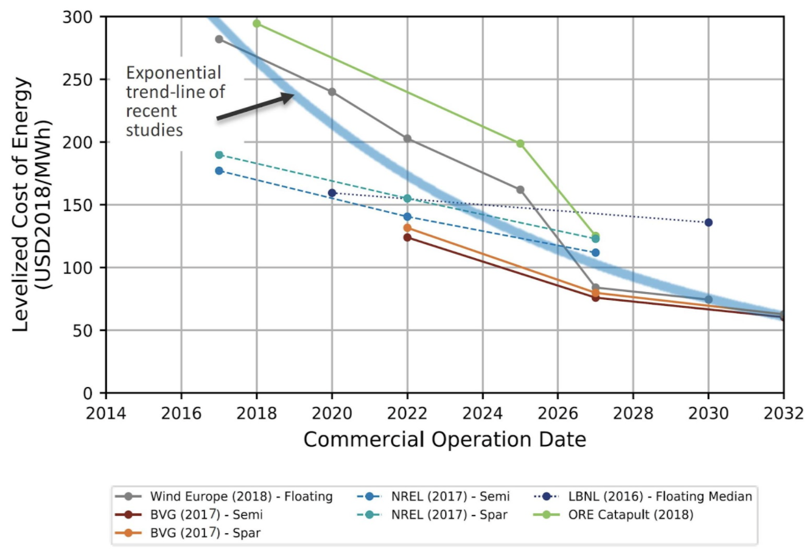

Floating offshore wind comes of age
To make wind power as cheap and as reliable as possible, wind developers seek to access the best wind resources - places where winds blow the fastest and steadiest. Across much of the world, the best winds are not on land. Rather, they’re offshore. The map below from NREL shows wind speeds across the U.S. The U.S. is blessed with exceptional winds in the sparsely populated interior. However, wind speeds near the population centers on the east and west coasts are less impressive - until you go offshore.
These wind trends are true globally.
The presence of better winds over water, combined with difficulties in siting wind turbines on land in densely populated areas, have led to a boom of offshore wind turbines with foundations in shallow sea beds, such as in the North Sea. However, in many parts of the world, including the U.S. west coast, the Atlantic coast of Europe, and large parts of Asia (particularly Japan), the sea bed drops away too steeply to allow bottom-mounted offshore wind turbines to be emplaced.
If we could access these deeper waters, the International Energy Agency finds that offshore wind turbines could power the entire world many times over.
Floating wind turbines offer a solution for deep-water wind power . These floating wind foundations were first deployed in tests a decade ago, and reached their first commercial deployment in 2017 in the Hywind project off the coast of Scotland. Today, multiple technologies for floating wind turbines are in development, as shown in an illustration from the U.S. Department of Energy.
Floating offshore wind, like many new technologies, started off as an extremely expensive approach to harvesting wind. However, the last decade of work has led to an incredible cost decline. Extrapolations now show that by the early 2030s, floating offshore wind will reach prices around $60/MWh or 6 cents per kwh, making it cost-competitive with wholesale grid power from fossil fuels.
